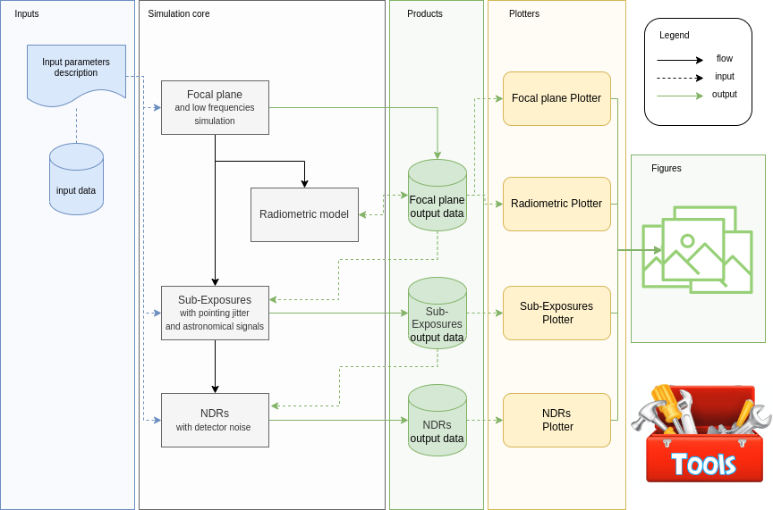

This guide will walk you through ExoSim 2. Here are listed the guides for all ExoSim pipelines and functionalities. ExoSim 2 includes multiple pipelines, called recipes. In this section all the recipes are listed and described. Some general information on the run and output can be found in Quickstart .
The following figure shows the ExoSim constellation.

The figure shows on the left the inputs, which are described in this documentation step by step as they are needed for the described process. The grey area contains the ExoSim recipes: these are the simulation pipelines which lead to the production of the simulated observations. The green column shows the products which are the simulation outputs. ExoSim produces 3 files, one for each pipeline. This allows the to change configuration between recipes as the output of the first is the input for the next one, with no need to re-run the full procedure. Also some Plotters is included in ExoSim 2 and it is reported here in yellow. Finally, the picture produced by the Plotters are reported in green to the far right of the figure.
The starting point is the focal plane creation with Focal plane . All the basic inputs scheme is also described in the same section of this documentation. This first step stores its product in the output data file. From this file other recipes can be run. A radiometric model can be run starting from the images of the focal plane, and it is described in Radiometric Model . The second step is the creation of sub-exposures, which is described in sub-exposures . Finally, the NDRs are produced, following the procedure in NDRs .
Exosim also includes a set of tools to help the users to prepare the simulation and produce some of the needed input data. Such tools are mentioned in the workflow description and extensively described in tools .
|
Quickstart Focal plane and low frequencies simulation Radiometric Model Sub-Exposures with pointing jitter and astronomical signal NDRs with detector noise Plotters Tools |